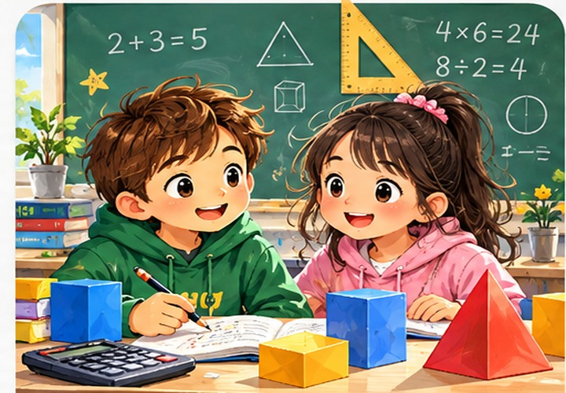

今天想学哪一科？
选择一个科目，进入本周学习。
听一听、读一读、做练习，每天进步一点点。
📚 我的科目
七门课程 + 国家考试 · 每周学习 · 随时复习
🇫🇷 Français法语 · 听说读写
›🇸🇪 Svenska瑞典语 · 阅读与语言
›🇬🇧 English英语 · Reading & Writing
›
➗ Matematik数学 · 计算与思维
›🔬 Naturvetenskap科学 · 观察与探索
›📚 中文阅读 · 词语 · 表达
›🌍 SO社会学科 · 世界人口与社会
›📝 Nationella prov六年级国家考试 · 数学 · 瑞典语 · 英语
›💡 已增加 Nationella prov · Åk 6 国家考试入口，包含官方数学、瑞典语和英语材料。原来的七门科目及链接均保留。